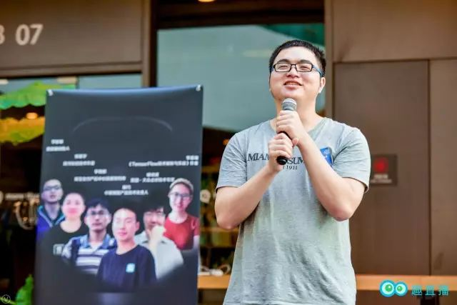
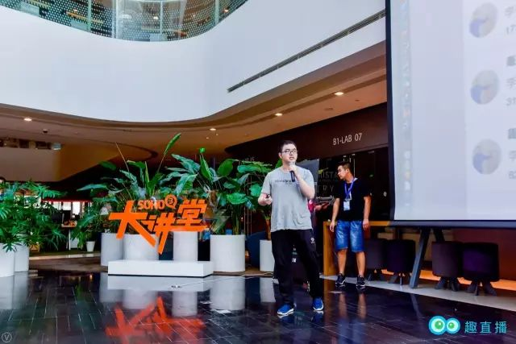

Entrepreneurship Insights Share | Original, translated by AI

Recently, Quiz Live held a technical personnel growth communication meeting, where Quiz Live CEO Zhiwei shared his entrepreneurial insights with us. Here is the video link:
We created this platform in what way? What did Quzhibo intend to do?
Today I’d like to share with all of you the story of Quzhibo in the past. The Chuzi mobile launch event was quite grand, wasn’t it?
At that time, I was young and impulsive, so I built a live platform on my own and promoted it on my social media. This was the first release of Quzhi Live.
During the release process, there was a small incident. Our slogan was “the first knowledge-based live platform,” but many people, including Xiaoshen, misunderstood it as “the first sex knowledge live platform.”
I’ve been pondering, what should I do? I pondered for a long time, since I have met Lei Ancheng and Tang Qiao, the big shots, can I create a live platform for them to share?
My initial thought was to create a usable platform. So, let’s make it a live platform. I completed the platform’s frontend and backend code compilation and product release on my own. Most of the frontend and backend knowledge I gained during the codereview collaboration with Gusi City, which came in handy. if you are proficient in many skills, then you will have no constraints in doing something.
At the beginning of the platform’s establishment, there was no popularity or anchors. Like many programmers, I am independent in my work and used to solve problems on my own. Since there were no anchors, I started broadcasting myself.
Later, I met Yidong, who was my former colleague. Yidong joined the company later than I did, and I often went to help him. He also helped me out at times, and we gradually became good friends. I sometimes went to Yidong’s dinner parties. Through the excellent friends around me, I went to their dinner parties, which helped me meet more excellent people.1. Everyone’s time is limited, so it’s best to spend as much time as possible interacting with these people as they may provide significant help.
Later, I was fortunate enough to invite Xuhw and Gusi, the “cows” from Gu City, to our platform for live broadcasts. Gradually, our platform gained some popularity. You’ll find that if you do things vertically, inviting guests becomes simpler. You can invite experts from different domains in the tech circle, for instance, Chen Gang, Qi Chao, Miao Shen.
- In my entrepreneurial journey, what I’ve felt most deeply is that I wasn’t bold enough in my actions.

For example, Miao Shen and Qi Ge, I could have invited them to our platform after Yi Long Live, since many of their friends had already broadcasted there. However, I always felt that I hadn’t had a proper conversation with them, fearing rejection or being ignored, and I remained in this state of fear, reluctant to approach them directly, instead opting for less influential hosts. After the company went through a loss, at home during the New Year, the few hundred dollars on me were all given by my father. My sister scolded me, saying that at my age, I should have given red envelopes to elders and seniors, but I was starting a business outside, penniless, even unable to send red envelopes.
That was the most painful and sad time for me. A man’s sadness was amplified by these things.
After returning to Beijing, I became more courageous, and actively invited various big Vs to come to our platform for live broadcasting. You should know that inviting them to be hosts was not to make them say bad things or blacken them, and the big Vs themselves were willing to share, so there was no need to be afraid, just communicate actively with them.
The facts were indeed so, and with this determination, I invited Gigi, Meowgod, and Sunny to come to our platform for live broadcasting, and the platform made a profit that month.
Every time, it was only when I was pushed to the brink, that I went to fight against the weaknesses on my person, those human weaknesses. I introduced a capable technical manager to my boss later, who helped him solve a major issue. Impressed by our profitable platform and the potential of the knowledge pay industry, my boss invested in us.
You need to make achievements yourself first. People will invest in you when you bring value to them. For instance, if your annual salary is 200 million, getting a 200 million investment is relatively easy since your ability is evident.
After securing the investment, the next step is managing the team effectively, which are the issues and challenges I will face next.
This is the story of Quzhaolive, and it’s also my entrepreneurial experience. I. Thank you all!